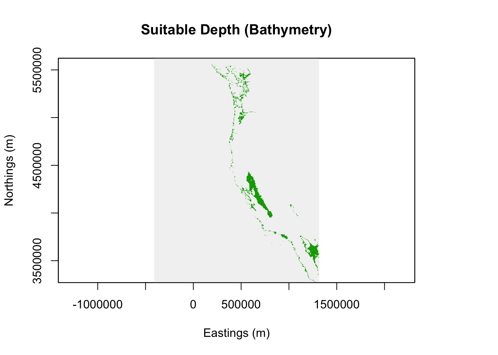
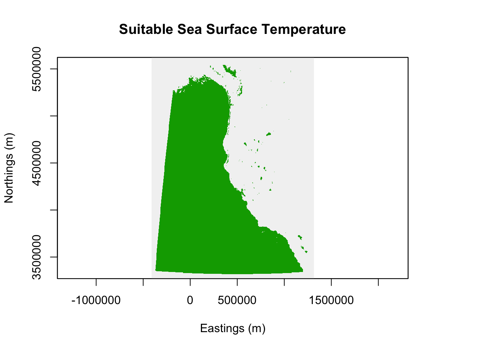
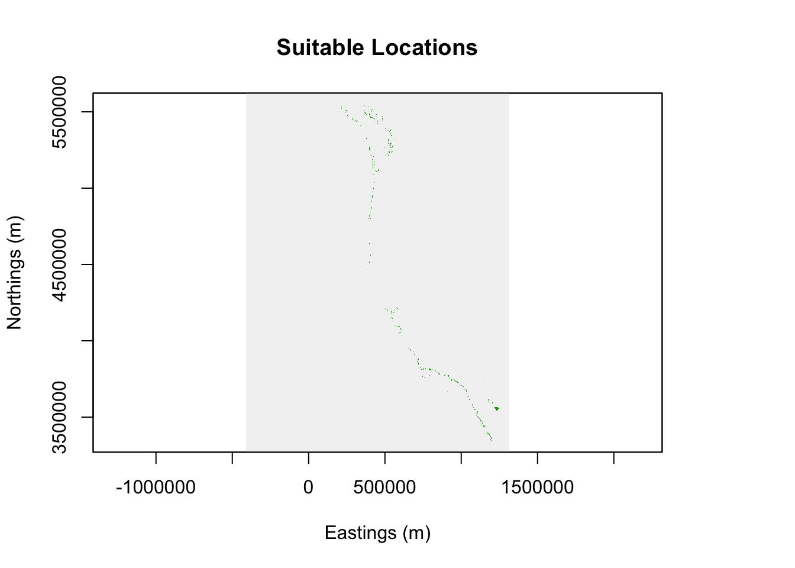
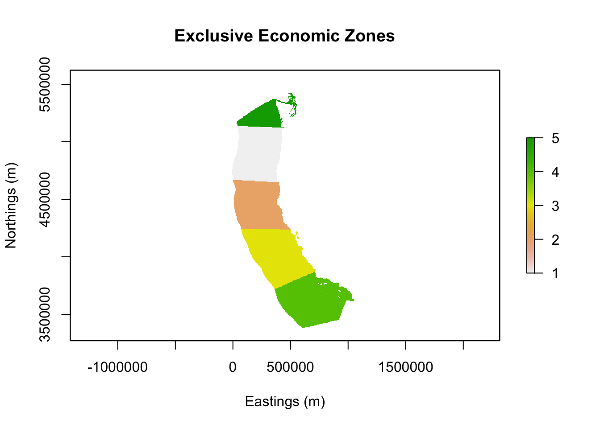
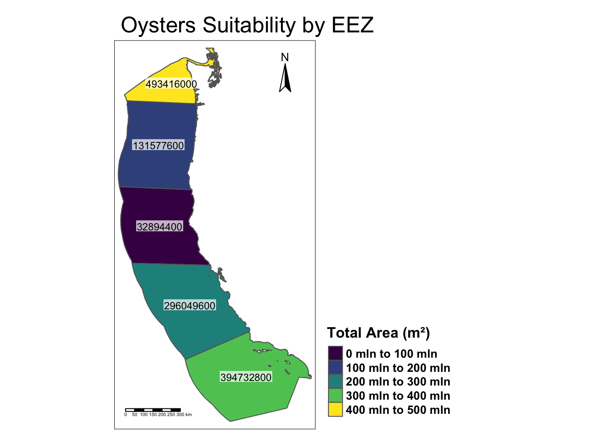
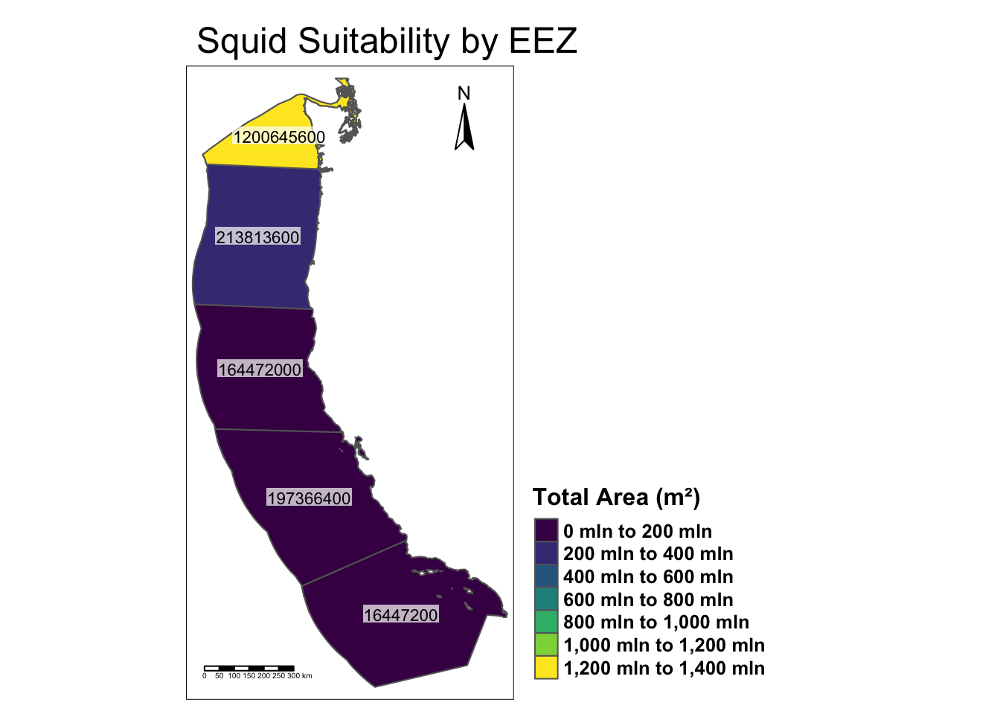

suppressMessages({
# Load required libraries
library(raster) # For raster operations
library(sp) # For spatial operations
library(sf) # For shapefile handling
library(ggplot2) # For data visualization
library(dplyr) # For data manipulation
library(terra) # For raster and vector manipulation (alternative to 'raster')
library(tmap) # For thematic mapping (visualization)
})Potential Aquaculture
West Coast Suitable Growing Conditions
Prioritizing potential aquaculture
Prepare Data
# One line to read, reproject, and convert to SpatialPolygonsDataFrame
west_coast_eez_sp <- as_Spatial(st_transform(st_read("data/wc_regions_clean.shp"), crs = "+proj=utm +zone=10 +datum=WGS84"))Reading layer `wc_regions_clean' from data source
`/Users/yos/Documents/MEDS/EDS-223/Potential-aquaculture-YoselynR/data/wc_regions_clean.shp'
using driver `ESRI Shapefile'
Simple feature collection with 5 features and 5 fields
Geometry type: MULTIPOLYGON
Dimension: XY
Bounding box: xmin: -129.1635 ymin: 30.542 xmax: -117.097 ymax: 49.00031
Geodetic CRS: WGS 84# Load bathymetry raster (RasterLayer object)
bathymetry_raster <- raster("data/depth.tif")
# Load SST rasters (RasterStack object)
sst_rasters <- stack(list.files(path = "data/", pattern = "sst.*.tif", full.names = TRUE))# Set the random seed for reproducibility
set.seed(123) # Set a fixed seed value for reproducibility# Check the CRS of each spatial object
crs_eez <- proj4string(west_coast_eez_sp) # CRS of the EEZ shapefile
crs_bathymetry <- projection(bathymetry_raster) # CRS of the bathymetry raster
crs_sst <- projection(sst_rasters) # CRS of the SST raster stack# Convert CRS to the target CRS (if it's not already in UTM Zone 10N)
if (crs_bathymetry != "+proj=utm +zone=10 +datum=WGS84") {
bathymetry_raster <- projectRaster(bathymetry_raster, crs = "+proj=utm +zone=10 +datum=WGS84")
print("Reprojected bathymetry raster to match UTM Zone 10N CRS.")
} else {
print("CRS of bathymetry raster already matches UTM Zone 10N.")
}[1] "Reprojected bathymetry raster to match UTM Zone 10N CRS."if (crs_sst != "+proj=utm +zone=10 +datum=WGS84") {
sst_rasters <- projectRaster(sst_rasters, crs = "+proj=utm +zone=10 +datum=WGS84")
print("Reprojected SST raster stack to match UTM Zone 10N CRS.")
} else {
print("CRS of SST raster stack already matches UTM Zone 10N.")
}[1] "Reprojected SST raster stack to match UTM Zone 10N CRS."(Building workflow for function)
Process Data
# Parameters for oysters
suitable_sst_min <- 11 # Minimum suitable SST for oysters in Celsius
suitable_sst_max <- 30 # Maximum suitable SST for oysters in Celsius
suitable_depth_min <- 0 # Minimum suitable depth in meters
suitable_depth_max <- 70 # Maximum suitable depth in meters
species_name <- "Oysters"# Calculate mean SST over the desired period (e.g., 2008-2012)
sst_mean <- mean(sst_rasters[[names(sst_rasters)[grepl(paste(2008:2012, collapse = "|"), names(sst_rasters))]]], na.rm = TRUE)
# Convert SST from Kelvin to Celsius
sst_celsius <- sst_mean - 273.15
crs_celsius <- projection(sst_celsius)
# Reproject SST raster stack to match EEZ CRS (if needed)
if (crs_celsius != "+proj=utm +zone=10 +datum=WGS84") {
sst_celsius <- projectRaster(sst_celsius, crs = "+proj=utm +zone=10 +datum=WGS84")
print("Reprojected SST raster stack to match UTM Zone 10N CRS.")
} else {
print("CRS of SST raster stack already matches UTM Zone 10N.")
}[1] "Reprojected SST raster stack to match UTM Zone 10N CRS."# Resample bathymetry raster and crop to extent of sst_celsius
bathymetry_raster <- resample(crop(bathymetry_raster, extent(sst_celsius)), sst_celsius, method = "ngb")Find Suitable Locations
# Set suitable and unsuitable areas in bathymetry
bathymetry_suitable <- calc(bathymetry_raster, fun = function(x) {
ifelse(is.na(x) |x <= suitable_depth_min | x >= suitable_depth_max, 0, 1)
})
# Plot the bathymetry suitability map to look at results
plot(bathymetry_suitable, main = "Suitable Depth (Bathymetry)", xlab = "Eastings (m)", ylab = "Northings (m)", legend=FALSE)
# Set suitable and unsuitable areas in Sea Surface Temperature
sst_suitable <- calc(sst_celsius, fun = function(x) {
ifelse(is.na(x) | x <= suitable_sst_min | x >= suitable_sst_max, 0, 1)
})
# Plot the SST suitability map to look at results
plot(sst_suitable, main = "Suitable Sea Surface Temperature", xlab = "Eastings (m)", ylab = "Northings (m)",legend=FALSE)
# Combine the suitability rasters using overlay (multiplication for both suitable conditions), both need to be 1 for suitability
suitable_locations <- overlay(bathymetry_suitable, sst_suitable, fun = function(x, y) {
x * y
})
# Plot the resulting suitability map to look at results and confirm successful overlay
plot(suitable_locations,main = "Suitable Locations", xlab = "Eastings (m)", ylab = "Northings (m)",legend=FALSE)
Determine the Most Suitable EEZ
# Rasterize the EEZ shapefile to match the resolution of the suitable locations raster
eez_raster <- rasterize(west_coast_eez_sp, suitable_locations, field = "rgn_id", fun = mean)
# Plot the EEZ raster to look at EEZ (if not already familiar with)
plot(eez_raster, main = "Exclusive Economic Zones", xlab = "Eastings (m)", ylab = "Northings (m)")
# Set the random seed for reproducibility
set.seed(123) # Set a fixed seed value for reproducibility
# Calculate the total suitable area by EEZ region using zonal(), calculate cell area
suitable_area_by_eez <- zonal(suitable_locations, eez_raster, fun = "sum", na.rm = TRUE)
cell_area <- res(suitable_locations)[1] * res(suitable_locations)[2]
# Multiply by cell area to get the total area (assuming suitable locations have values 1)
total_area_by_eez <- suitable_area_by_eez[,2] * cell_area
# View the results
print(total_area_by_eez)[1] 131577600 32894400 296049600 394732800 493416000# Merge the total area data with the EEZ shapefile to prepare for plotting
west_coast_eez_sp$Total_Area <- total_area_by_eez
# View Columns of EEZ shapefile to make sure column is added
head(west_coast_eez_sp@data) rgn rgn_key area_m2 rgn_id area_km2 Total_Area
1 Oregon OR 179994061293 1 179994.06 131577600
2 Northern California CA-N 164378809215 2 164378.81 32894400
3 Central California CA-C 202738329147 3 202738.33 296049600
4 Southern California CA-S 206860777840 4 206860.78 394732800
5 Washington WA 66898309678 5 66898.31 493416000Map
# Plotting the West Coast EEZ (Exclusive Economic Zone) shapefile
tm_shape(west_coast_eez_sp) +
tm_borders() + # Adding borders for the EEZ boundaries
tm_fill(col = "Total_Area", # Color the polygons based on the 'Total_Area' attribute
palette = "viridis", # Color palette for the fill (Viridis color scheme)
title = "Total Area (m²)") + # Title for the color legend
tm_text("Total_Area", # Text labels showing 'Total_Area'
size = 0.7, # Text size
col = "black", # Text color
fontface = "bold", # Bold font for the labels
bg.col = "white", # Background color for text labels
bg.alpha = 0.7) + # Background transparency
tm_layout(main.title = paste(species_name, "Suitability by EEZ"), # Title with species name
legend.outside = TRUE, # Place the legend outside the map
legend.position = c("left", "bottom"), # Position of the legend
legend.width = 2, # Width of the legend
legend.title.size = 1.2, # Font size for the legend title
legend.text.size = 0.8, # Font size for the legend text
legend.title.fontface = "bold", # Bold font for the legend title
legend.text.fontface = "bold") + # Bold font for the legend text
tm_scale_bar(position = c("left", "bottom")) +
tm_compass(position = c("right", "top")) # Position of the compass
Reflection
The map above for the oyster species shows the exclusive economic zones with the area suitability, specific to its temperature and depth preferences. The zone with the most area in m2 for oyster aquaculture is Washington. Southern California has the second largest suitable area for oyster aquaculture and Central California follows. Interestingly Central California has the least suitable area for oyster aquaculture, noticeable in the “Suitable Locations” mask. The area is calculated from the x and y pixels in m2 and multiplied with 0 or 1 to give the final numbers. The set.seed allows for reproducibility and helps produce the same output each time. I kept everything in Large RasterLayer along with the West Coast EEZ Spatial Polygons and transformed crs to UTM 10 for meters in the west coast. Overall the approach to the workflow was to minimize the code but have clear output visualizations to understand each step.
Function for any species
# General function to determine suitable locations for marine aquaculture
calculate_suitable_eez_area <- function(sst_rasters, bathymetry_raster, eez_shapefile,
suitable_sst_min, suitable_sst_max,
suitable_depth_min, suitable_depth_max,
species_name, seed = 123) {
# Set the random seed for reproducibility
set.seed(seed)
# 1. Calculate mean SST over the desired period (e.g., 2008-2012)
sst_mean <- mean(sst_rasters[[names(sst_rasters)[grepl(paste(2008:2012, collapse = "|"), names(sst_rasters))]]], na.rm = TRUE)
# 2. Convert SST from Kelvin to Celsius
sst_celsius <- sst_mean - 273.15
# 3. Reproject SST raster stack to match EEZ CRS (if needed)
crs_celsius <- projection(sst_celsius)
if (crs_celsius != "+proj=utm +zone=10 +datum=WGS84") {
sst_celsius <- projectRaster(sst_celsius, crs = "+proj=utm +zone=10 +datum=WGS84")
print("Reprojected SST raster stack to match UTM Zone 10N CRS.")
} else {
print("CRS of SST raster stack already matches UTM Zone 10N.")
}
# 4. Resample bathymetry to match SST raster
bathymetry_raster <- resample(crop(bathymetry_raster, extent(sst_celsius)), sst_celsius, method = "ngb")
# 5. Calculate bathymetry suitability
bathymetry_suitable <- calc(bathymetry_raster, fun = function(x) {
ifelse(is.na(x) | x <= suitable_depth_min | x >= suitable_depth_max, 0, 1)
})
# 6. Calculate SST suitability
sst_suitable <- calc(sst_celsius, fun = function(x) {
ifelse(is.na(x) | x <= suitable_sst_min | x >= suitable_sst_max, 0, 1)
})
# 7. Combine suitability maps (overlay)
suitable_locations <- overlay(bathymetry_suitable, sst_suitable, fun = function(x, y) {
x * y # Both need to be 1 for suitability
})
# 8. Rasterize EEZ shapefile to match suitable locations raster
eez_raster <- rasterize(eez_shapefile, suitable_locations, field = "rgn_id", fun = mean)
# 9. Calculate total suitable area by EEZ region
suitable_area_by_eez <- zonal(suitable_locations, eez_raster, fun = "sum", na.rm = TRUE)
cell_area <- res(suitable_locations)[1] * res(suitable_locations)[2]
total_area_by_eez <- suitable_area_by_eez[, 2] * cell_area
# 10. Merge the total area data with the EEZ shapefile
eez_shapefile$Total_Area <- total_area_by_eez
# 11. Plot the results using tmap
map <- tm_shape(eez_shapefile) +
tm_borders() +
tm_fill(col = "Total_Area",
palette = "viridis",
title = "Total Area (m²)") +
tm_text("Total_Area",
size = 0.7,
col = "black",
fontface = "bold",
bg.col = "white",
bg.alpha = 0.7) +
tm_layout(main.title = paste(species_name, "Suitability by EEZ"),
legend.outside = TRUE,
legend.position = c("left", "bottom"),
legend.width = 2,
legend.title.size = 1.2,
legend.text.size = 0.8,
legend.title.fontface = "bold",
legend.text.fontface = "bold")+
tm_scale_bar(position = c("left", "bottom")) +
tm_compass(position = c("right", "top"))
return(map)
}Squid
# Define the species name for the map title or further analysis
species_name <- "Squid" # Setting the species name for easy reference in plots or output
suitable_sst_min <- 8 # Minimum sea surface temperature (in °C) for squid suitability
suitable_sst_max <- 13 # Maximum sea surface temperature (in °C) for squid suitability
suitable_depth_min <- 20 # Minimum suitable depth (in meters) for squid
suitable_depth_max <- 180 # Maximum suitable depth (in meters) for squid
map_squid <- calculate_suitable_eez_area(sst_rasters, # Sea Surface Temperature raster data
bathymetry_raster, # Bathymetry (depth) raster data
west_coast_eez_sp, # EEZ spatial data
suitable_sst_min, # Minimum SST for suitability
suitable_sst_max, # Maximum SST for suitability
suitable_depth_min, # Minimum depth for suitability
suitable_depth_max, # Maximum depth for suitability
species_name) # Name of the species [1] "Reprojected SST raster stack to match UTM Zone 10N CRS."# Print the resulting map or summary of the suitable areas for the species
print(map_squid) 
Reflection
The map above for the squid species shows the exclusive economic zones with the area suitability, specific to its temperature and depth preferences. Squid is suitable in more areas than oyster, ranging up to 1200 million m2 in Washington. The total area for California zones are much closer to the oyster areas in the same zones but still differ. It would be interesting to see the “Suitable Locations” mask for squid. I assume the area would be further from the coast because of the colder temperature and extent of greater depth. The function can be used with different max depth, min depth, max temperature, min temperature, and species name. I kept only the necessary code for that portion after evaluating what was necessary from the workflow. I set a seed for reproducibility and cache = TRUE to ensure the same output each time it is ran and rendered.
References
Hijmans, R. J. (2023). raster: Geographic Data Analysis and Modeling (R package version 3.6-23). Retrieved from https://CRAN.R-project.org/package=raster. Bivand, R. S., Pebesma, E. J., & Gómez-Rubio, V. (2013). Applied Spatial Data Analysis with R (2nd ed.). Springer. Pebesma, E. J. (2018). Simple features for R: Standardized support for spatial vector data. R Journal, 10(1), 439-446. https://doi.org/10.32614/RJ-2018-009. Wickham, H. (2016). ggplot2: Elegant Graphics for Data Analysis. Springer. https://doi.org/10.1007/978-3-319-24277-4. Wickham, H., & Francois, R. (2020). dplyr: A Grammar of Data Manipulation (R package version 1.0.4). Retrieved from https://CRAN.R-project.org/package=dplyr. Hijmans, R. J. (2022). terra: Spatial Data Analysis (R package version 1.6-32). Retrieved from https://CRAN.R-project.org/package=terra. Tennekes, M. (2018). tmap: Thematic Maps in R. Journal of Statistical Software, 84(6), 1-39. https://doi.org/10.18637/jss.v084.i06.